Without sacrificing lead volume Without relying on overly aggressive discounts (without sacrificing lead volume or relying on overly aggressive discounts)
The 7 controllable factors that make Meta leads convert worse, and how we fix each one.
Which vertical is your business in?
“We generated $100k in revenue on $7,500 in spend in our first month with Alloy Media. The leads have been tremendous.”
Running paid media for 7, 8, and 9 figure remodeling businesses
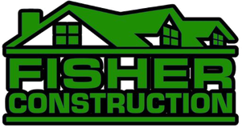
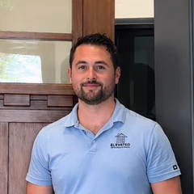
| Metric | Before | After |
|---|---|---|
| Cost per lead | $380 | $130 |
| Set rate | 18% | 52% |
| Cost of marketing | Not profitable | 7.5% |
| Revenue | Not recorded | $101,000 |
Which vertical is your business in?
“We generated $100k in revenue on $7,500 in spend in our first month with Alloy Media. The leads have been tremendous.”
See if we’re a fit
Rather than relying on the same offers, generic scripts, and stock assets, we test a range of angles with authentic, people-first video.
If your team doesn’t want to be on camera, we can source talent to deliver the scripts.
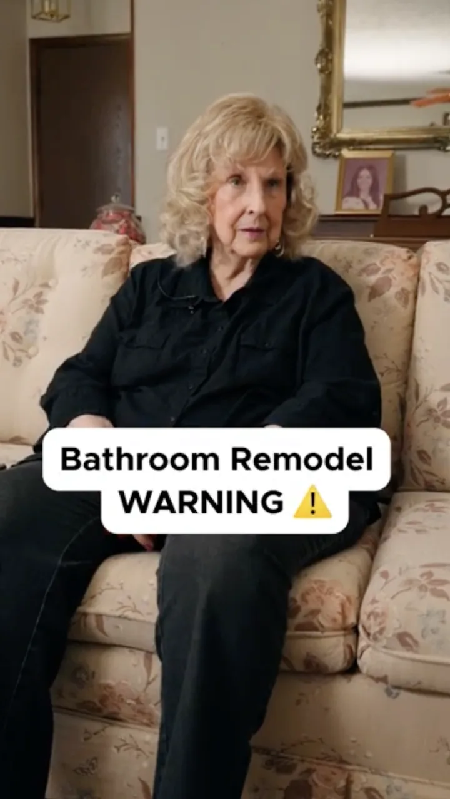
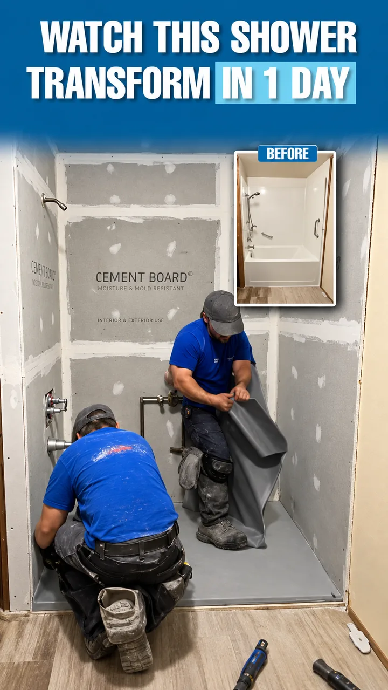
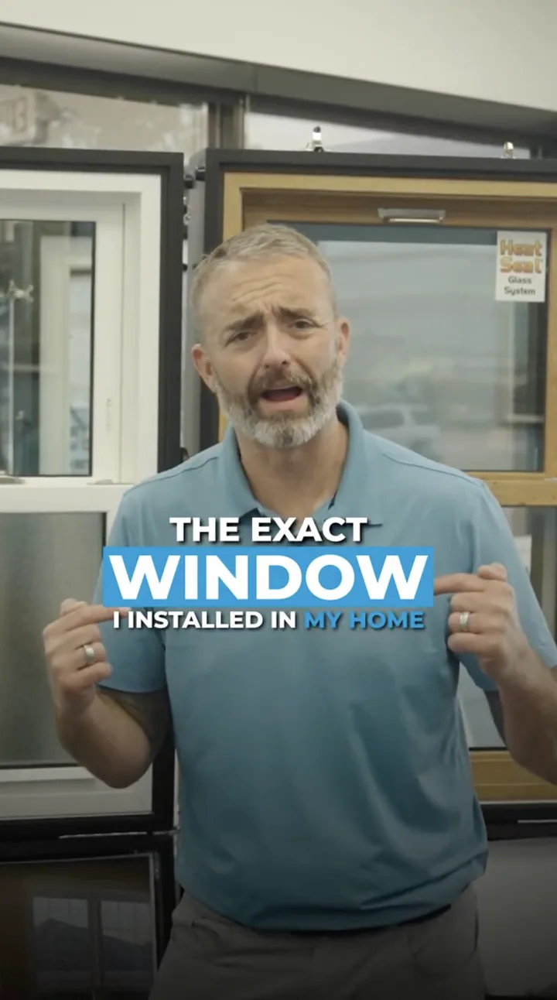
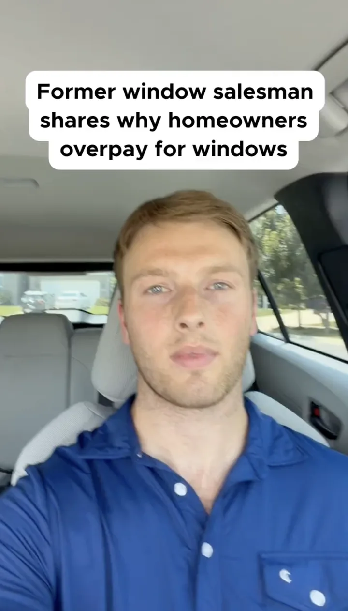
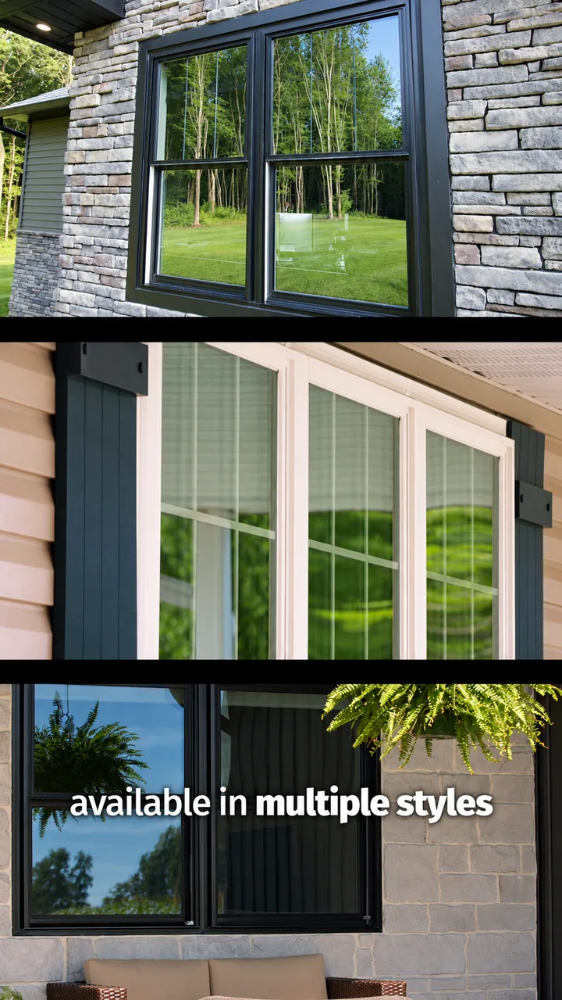
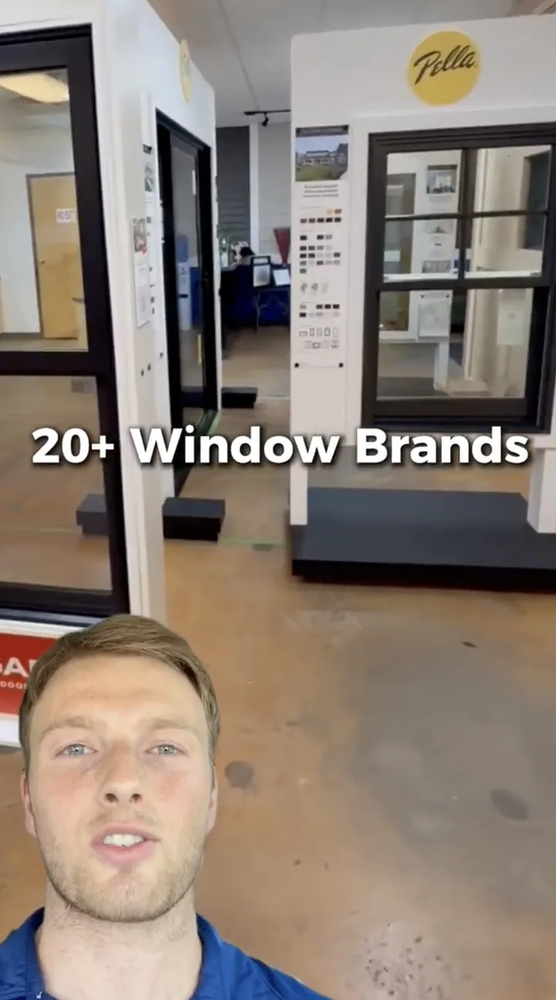
Most landing pages are bare-bones: an offer, a form, and little else. They collect the lead, but inside sales starts the call at zero. Ours educate prospects before the call, so they’re easier to set.
A live client page, top to bottom.
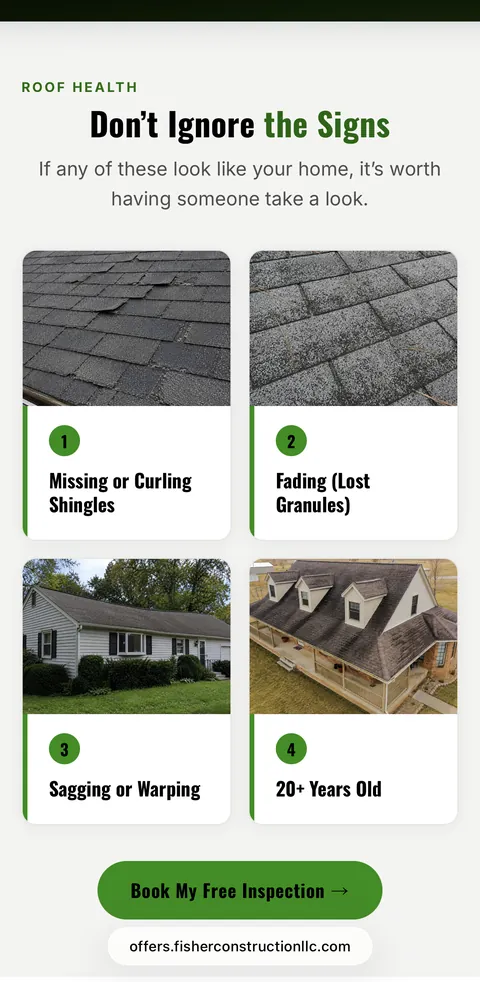
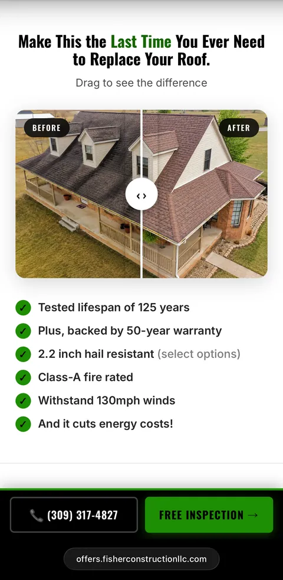
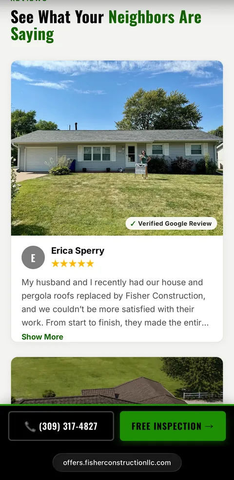
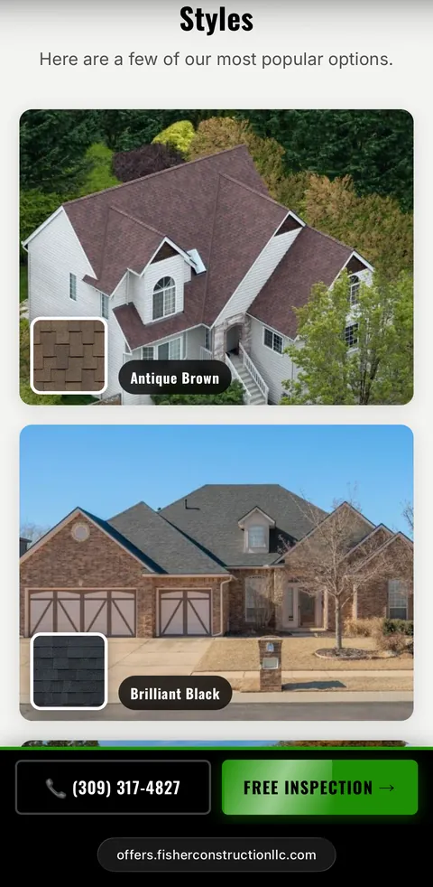
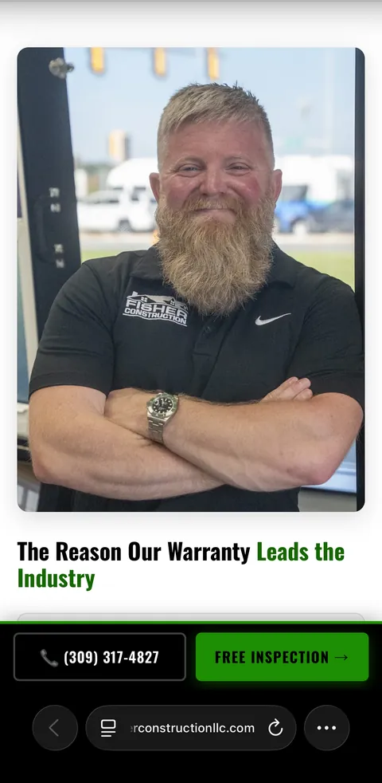
Meta lead gen campaigns work best when Meta can see which leads actually become appointments and sales. That feedback teaches the algorithm what a valuable lead looks like, so it can find more people like them.
Most campaigns never create that feedback loop because home-service CRMs like MarketSharp, Lead Perfection, and ServiceTitan weren’t built to pass digital marketing data and downstream sales outcomes back to Meta. Out of the box, the web data and CRM data live in separate systems.
We built the integration that connects them. Every appointment and sale becomes another signal Meta can learn from, so targeting gets smarter over time.
Bonus: we can also exclude leads from your other sources, reducing the chances you pay Meta to reach people already in your database.
Most home-service CRMs stop at the lead. Alloy closes the loop.
Four questions. If we are not the right agency for you, the form will say so.
Which vertical is your business in?
“We generated $100k in revenue on $7,500 in spend in our first month with Alloy Media. The leads have been tremendous.”
No pitch deck · No obligation · Takes 60 seconds
Placeholder. This is the first question everyone has and burying it costs more leads than answering it ever will. A range and what it depends on belongs here.
Placeholder. Worth splitting into two honest answers: when the ads start producing leads, and the longer window before the offline conversion data has taught the algorithm enough to change what the leads are worth.
Placeholder.
Placeholder. A real objection for anyone who has been burned by an agency that held the account hostage on the way out.
Placeholder. MarketSharp, Lead Perfection, ServiceTitan and JobNimbus are already wired; anything else is a scoping question.
Placeholder.
Placeholder.